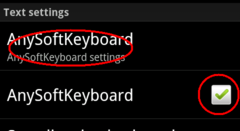
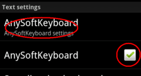
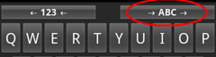

Install AnySoftKeyboard
(below) and later change its settings:

Choose "Keyboards": 
Enable the Esperanto keyboard:

Reen al la Esperanta versio
This program helps you install various stuff, that is interesting for Esperanto-speakers, and help you later use it.
Note: Depending on the speed of of your Internet connection, installation of the apps can take some time. You might have to pay per megabyte you transfer to your phone.
For writing the Esperanto letters ĉ, ĝ, ĵ etc. you must do the following steps:
Install AnySoftKeyboard
Install the Esperanto keyboard for AnySoftKeyboard
And then you must activate and choose the keyboard.
Activating and choosing the keyboard is a little bit complicated.
You
must do the following steps:
Install AnySoftKeyboard
(below) and later change its settings:

Choose "Keyboards":
Enable the Esperanto keyboard:
Did you get it?
OK, now click
to activate the Esperanto-keyboard.
But it's not over
yes.
You must also choose the keyboard to be able to use
it!
You do that by:
Click and long press on
some editable text.
The following menu will appear: 
Choose 'Input method' and
'AnySoftKeyboard': 
Later on you must alter the
keyboard appearance to Esperanto:

And there! Finally you can use the Esperanto keyboard in
your phone!
You can install the dictionaries of Lernu.net (DictionaryForMIDs). The Esperanto dictionaries are a bit down in the list.
To use Esperanto in the program: Press the MENU button and choose Preferences. Here you choose Language and Esperanto.
Mejzi la muso - Esperanto speak from the Esperanto versions of the films about the tiny mouse Mejzi. Perpaps read more or see one from the films.
Please contact me and report.
Jacob Nordfalk